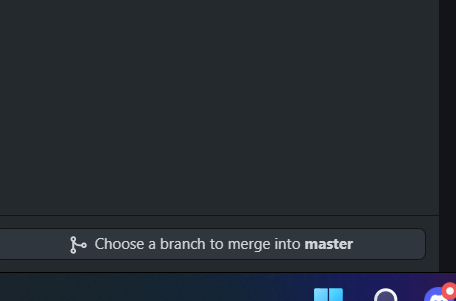
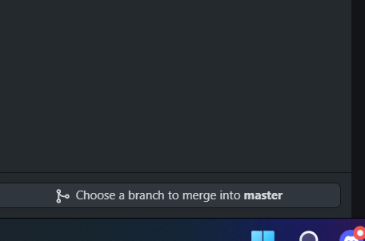

Starting Phases
Learning the ropes of web development has been a very shaky experience for me, this is mainly due to me not having much experience when it comes to coding languages as a whole but i gave it my best either way and the result came out fairly decent. The main area i had troubles with were the hyperlinks as i had a lot of trouble syncing them with my github, to fix this i learnt how to successfully merge pages into the master branch

This image shows how i've managed to create the hyperlinks to the other webpages and what kind of codes i used. The codes used here were from a recycled work project i had did before i started this assignment in which i reused and changed certain aspects in order for it to fit my websites theme.
 
